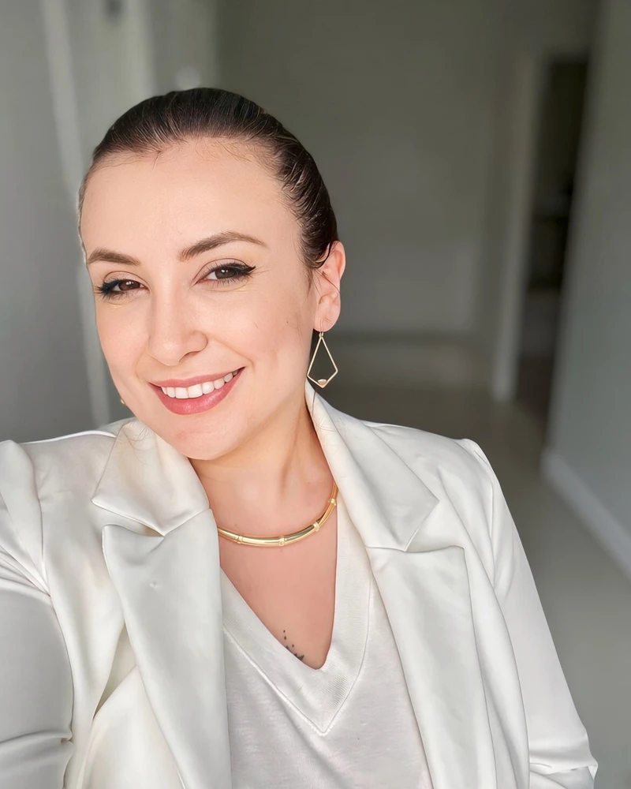
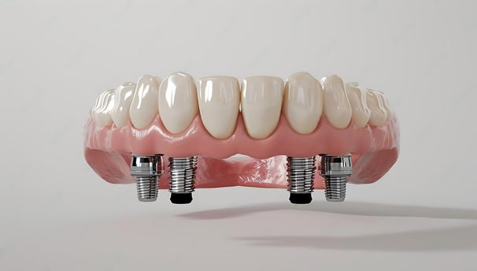
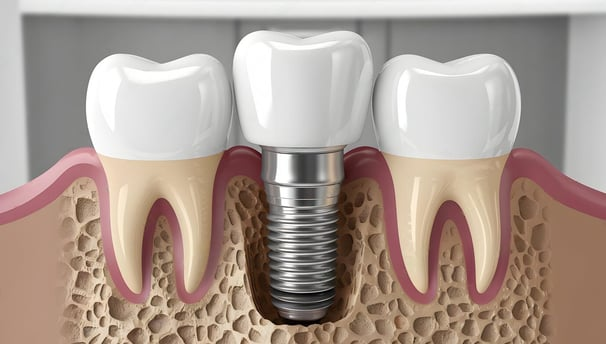
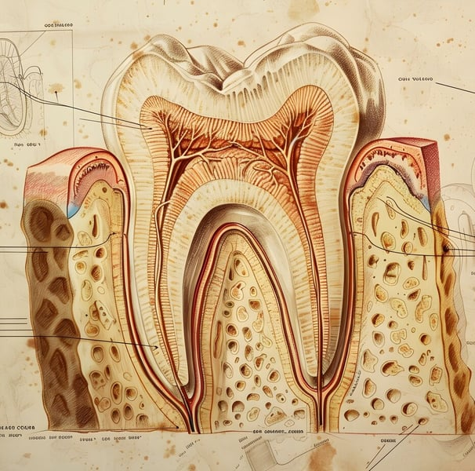

A Importância dos Exames e Enxerto Ósseo
Entenda por que o raio-X e a tomografia 3D são cruciais para mapear a altura e espessura óssea, viabilizando enxertos e instalação segura.
Ler sobre Enxerto e Exames →Atendimento odontológico individualizado com a Dra. Caroline Santos do início ao fim. Especialista em Implantes Dentários, Reabilitação Oral e Estética no Centro de Atibaia.

“Minha missão é proporcionar a você um atendimento com calma, técnica apurada e com acolhimento.”
Com consultório próprio em Atibaia desde 2018, faço questão de atender pessoalmente cada paciente, garantindo uma experiência acolhedora, transparente e segura do começo ao fim do tratamento.
Acredito na atualização científica contínua aliada a materiais de primeira linha para entregar resultados funcionais duradouros e um sorriso esteticamente natural.
Procedimentos planejados sob medida para devolver a saúde, a funcionalidade da mastigação e a harmonia estética ao seu sorriso.
Solução definitiva e segura para reposição de dentes perdidos. Realizados com planejamento minucioso para restaurar a firmeza na mastigação, proteger a estrutura óssea e devolver a confiança ao sorrir.
Próteses sobre implantes (protocolo fixo) ou removíveis, confeccionadas de forma personalizada para proporcionar máximo conforto, encaixe preciso e mastigação sem insegurança.
Tratamentos de canal executados com rigor técnico, conforto anestésico e máxima eficiência para preservar dentes comprometidos e eliminar a dor de forma segura.
Agendar consulta de Canal →Reabilitação estética com facetas e lentes que corrigem cor, formato e pequenos desalinhamentos dentais, valorizando a harmonia natural do seu rosto.
Avaliar Estética Dental →Procedimentos planejados para realçar a simetria facial, melhorar o contorno e complementar a beleza do sorriso com elegância e naturalidade.
Saber mais sobre Harmonização →Conhecidos como “aparelhos invisíveis”, os alinhadores são muito mais precisos, rápidos e seguros do que os aparelhos convencionais, além de serem mais confortáveis e discretos.
Consultar sobre Aparelho →Remoções cirúrgicas cuidadosas (incluindo dentes do siso), focando em segurança e em um pós-operatório confortável.
Agendar Avaliação Cirúrgica →Limpeza profissional (profilaxia), raspagem, restaurações estéticas e acompanhamento contínuo da saúde bucal para toda a família.
Agendar Check-up Dental →Cuidado humanizado e atenção genuína que fazem a diferença na sua saúde e tranquilidade.
Aqui, é a própria Dra. Caroline Santos quem planeja e realiza todo o seu tratamento, garantindo coerência e segurança do início ao fim. Sem troca-troca de dentistas.
Dedico tempo para escutar suas queixas, avaliar exames detalhadamente e esclarecer cada dúvida com calma e transparência. Atendimento pontual sem longas esperas.
Ambiente calmo e silencioso, com um atendimento paciente e acolhedor, ideal para quem sente ansiedade ou receio de procedimentos odontológicos.
Trabalho com fornecedores certificados e insumos de alta qualidade para garantir durabilidade e biossegurança absoluta.
Depoimentos reais de quem confiou a saúde bucal e o sorriso aos cuidados da Dra. Caroline Santos.
“Atendimento incrível, equipe super competente, a Dra Caroline é muito profissional, me pediu exames para um diagnóstico preciso. Lugar extremamente limpo e material esterilizado, já ganhou uma paciente e recomendei para toda minha família e amigos. Estou muito satisfeita.”
“Ótimo atendimento! Dá pra perceber que te atendem com cuidado e atenção! Local muito limpo! Ah! São super pontuais nos atendimentos! Isso é importante pra mim! 😊”
“Dra Carol super competente, profissional exemplar. Atende toda minha família com maior carinho e atenção! Clínica limpíssima e organizada. Obrigada pela atenção com meu pequeno.”
“A Dra. Carol me atendeu com paciência, mesmo sabendo que tenho medo de dentista. Ela passou muita segurança! Super recomendo!”
“Ótimo ambiente, agradável, limpo e organizado! Dra Carol uma excelente pessoa, gostei muito dela, deu ótimas dicas e me ajudou no que eu precisei! RECOMENDO DEMAIS 👏👏👏👏👏”
“Fiquei muito satisfeito com o tratamento que recebi. O cuidado e o detalhismo da Dra. Carol fizeram toda a diferença na minha experiência.”
Tire suas principais dúvidas sobre implantes e saúde bucal com artigos da Dra. Caroline Santos.

Entenda por que o raio-X e a tomografia 3D são cruciais para mapear a altura e espessura óssea, viabilizando enxertos e instalação segura.
Ler sobre Enxerto e Exames →
Descubra como fixar todos os dentes sobre implantes devolve a segurança para mastigar e falar sem medo de mobilidade.
Conhecer a Prótese Protocolo →
Desde a consulta de avaliação e planejamento até a osseointegração e a instalação da coroa definitiva.
Ver Guia Completo de Implante →Tudo o que você precisa saber sobre meu modelo de atendimento, agendamento e formas de pagamento.
Localização privilegiada com vaga privativa na porta e estrutura térrea para sua comodidade.
CROSP 127791 | Responsável Técnica: Dra. Caroline Santos